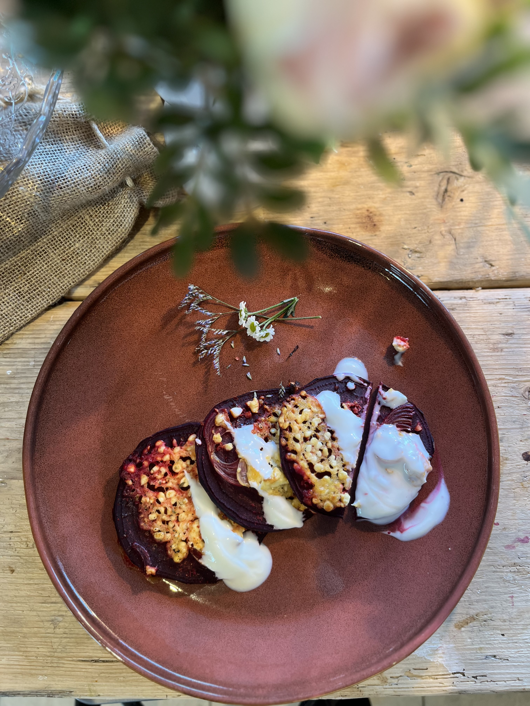

Alles selbst getestet. Histaminfreundlich. Darmschonend.
Ich esse viel gleiches immer noch.
Aber teste trotzdem gerne auch neue Dinge.
Alles histaminarm und fructosearm für dich.
Glutenfrei und laktosefrei möglich.
Ideen für morgens — histaminarm, sättigend, ohne langes Rühren.
In Arbeit
Nº 02Kleine Sachen für zwischendurch. Auch für unterwegs.
1 Rezept
Rote-Bete-Teller · Zucchini-Aufstrich.
2 Rezepte
Suppen, Eintopf, Zucchini-Pfanne.
6 Rezepte
Zum Vorbereiten für die Woche. Ohne dass Histamin durch Standzeit hochgeht.
In Arbeit
Schokoetwas · Apfelwolken · Eis.
4 Rezepte
Protein-Brot · Knäckebrot — glutenfrei und verträglich.
2 Rezepte
Nº 08Süßkartoffel-Salat mit Quark und Hüttenkäse.
1 Rezept
Glutenfrei, ohne Industriezucker. Ampel pro Rezept (Histamin, Darm, Zyklus). Mit Mehl-Alternativen und Reflux-Filter.
Zur TerraLuna AppWichtig: Alle Rezepte basieren auf meiner eigenen Erfahrung. Jeder Körper reagiert anders — teste vorsichtig, wenn du unsicher bist.